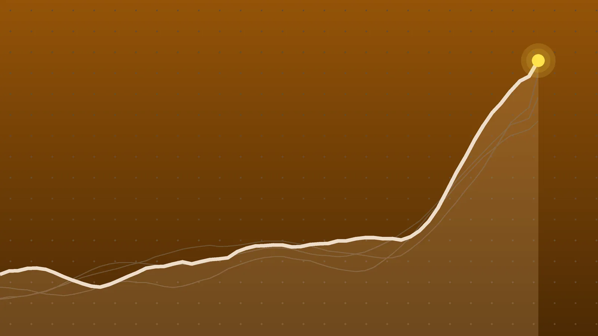

BusinessExplainer
Lagarde Resigns: ECB President to Leave Feb. 7, 2027, Early
The euro zone’s top central banker is leaving in the middle of an inflation fight, and two more seats on the ECB’s six-person board open up within months. Europe’s leaders now have a hiring problem.

Quick take
- Christine Lagarde will resign as ECB president on Feb. 7, 2027, almost nine months before her eight-year term was due to end on Oct. 31, 2027.
- The ECB gave no reason; the Financial Times reported she has discussed becoming chair of the World Economic Forum.
- Klaas Knot of the Netherlands and Pablo Hernández de Cos of Spain are seen as the frontrunners to replace her.
- The same day, the ECB left its deposit rate at 2.5%, after raising rates twice since June.
Why it's trending On Oct. 29, 2026, hours before an ECB rate decision, Christine Lagarde announced she will step down as European Central Bank president on Feb. 7, 2027.
What happened
Christine Lagarde is resigning as president of the European Central Bank. She will leave on Feb. 7, 2027, the bank confirmed Thursday, Oct. 29, after she informed both the bank’s policy-setting Governing Council and António Costa, who chairs the European Council,, The National reported. Her eight-year term was due to run until Oct. 31, 2027.
The ECB’s announcement gave no reason for the early exit, EU Perspectives noted. In a statement, Lagarde said she leaves “with a sense of good work done.” Costa said the search for a successor starts right away.
The news landed hours before a scheduled rate decision. At 13:15 UTC the ECB kept its key rates unchanged, leaving the deposit rate at 2.5%, in line with forecasts, TT News Agency reported.
Why the Lagarde resignation matters
The ECB sets interest rates for the 21 countries that use the euro, so its president is one of the most powerful economic officials in the world. Lagarde’s departure is one of the biggest leadership changes in the bank’s 28-year history, according to the Financial Times, as published by The Irish Times.
The timing is awkward. The bank is in the middle of a fight against inflation, driven by a new jump in energy costs tied to the Iran war. It raised rates in June and September, and money markets expect about three more increases that would lift the deposit rate to 3.25%, Reuters reported on the eve of the meeting. Government borrowing costs have also surged, especially in France, where the extra yield investors demand over German bonds recently hit its highest level since 2011, according to Investing.com. (For background, see our explainer on French bond yields hitting 5%.)
Lagarde is not the only one leaving. Executive board member Isabel Schnabel is cutting her term short by a year to take a senior job at the International Monetary Fund in early 2027, and chief economist Philip Lane’s term ends in May. That means three of the six seats on the ECB’s executive board will change hands within about seven months.
Why is she leaving now?
Officially, no reason was given. The reporting points to two threads:
- A new job. The FT reported that she has held talks about becoming chair of the World Economic Forum, the group behind the annual Davos meeting. Reuters said the forum could name her as soon as November.
- French politics. France holds a presidential election next spring, and far-right leader Marine Le Pen is the reported poll favorite, according to The National. Leaving in February gives EU leaders time to choose a successor before that vote.
Lagarde, 70, said earlier this year that when she and French President Emmanuel Macron agreed she would take the post, she pictured a five-year stint in Frankfurt rather than eight, the FT reported. She had repeatedly declined to promise she would finish her term.
Lagarde’s tenure by the numbers
| Item | Detail |
|---|---|
| Took office | Nov. 1, 2019, succeeding Mario Draghi |
| Leaves | Feb. 7, 2027 |
| Time in the job | about 7 years and 3 months |
| Cut short by | almost 9 months (term was to end Oct. 31, 2027) |
| Her place in ECB history | 4th president, 2nd from France |
| Early exits before her | 1 (Wim Duisenberg) |
Her years were dominated by crises: the pandemic, the war in Ukraine, the biggest inflation shock in a generation and a trade war with the U.S., the FT noted.
Leaving early is rare but not new. Duisenberg, the Dutch banker who was the ECB’s first president, stepped down after about five years under a deal struck in advance to settle a France-Germany standoff before the bank opened in 1998, Investing.com reported.
Who could replace Lagarde, and how it works
Two names lead the field:
- Klaas Knot, former head of the Dutch central bank, backed by the Dutch government.
- Pablo Hernández de Cos, former governor of the Bank of Spain and now general manager of the Bank for International Settlements, backed by Spain.
The president is appointed by the European Council, the body of EU leaders, under Article 283 of the EU treaty, Investing.com noted. The process runs through a recommendation from the Council of the EU and consultations with the European Parliament and the ECB’s Governing Council, according to EU Perspectives. Any new executive board member needs support from 16 or more of the 21 euro countries, which together must account for 65% of the bloc’s population, the FT reported.
In plain terms, a candidate needs broad support from both big and small countries. A bloc of the largest economies can’t push someone through alone, and a handful of small ones can’t easily block a choice.
What happens next
- November and December: EU leaders hold summits where they will try to agree on a successor, Investing.com reported.
- December: another rate increase is seen as likely, potentially as soon as December, according to Reuters and The National.
- Feb. 7, 2027: Lagarde’s last day. Her successor takes over the inflation fight, with two more board seats to fill soon after.
Quick answers
When is Christine Lagarde leaving the ECB?
She will step down on Feb. 7, 2027, almost nine months before her term was set to end on Oct. 31, 2027.
Why did Lagarde resign?
The ECB did not give a reason. According to the Financial Times, she has discussed becoming the World Economic Forum’s chair, and the timing lets EU leaders pick a successor before France’s spring presidential election.
Who will be the next ECB president?
No one has been chosen. Klaas Knot of the Netherlands and Pablo Hernández de Cos of Spain are seen as the frontrunners, and EU leaders make the final appointment.
Sources
- The Irish Times / Financial Times Christine Lagarde to step down as ECB president nine months ahead of scheduleOct. 29, 2026
- The National ECB President Christine Lagarde resigns after months of speculationOct. 29, 2026
- Investing.com via Yahoo Finance ECB's Lagarde to resign in February 2027Oct. 29, 2026
- EU Perspectives Lagarde to leave ECB early as EU opens search for successorOct. 29, 2026
- Reuters via WTVB ECB to hold rates as investors focus on French bonds, Lagarde's futureOct. 28, 2026
- Sweden Herald / TT News Agency ECB Holds Key Interest Rates Steady, Deposit Rate Remains at 2.50%Oct. 29, 2026
Keep reading

Fed Holds Rates at 3.75%-4% as Cook and Hammack Push for a Hike
The Federal Reserve held its rate at 3.75% to 4% on Oct. 28, with two officials voting for a hike. What changed, why it paused and what December may bring.

Bank of Canada Raises Rate to 2.5%, Its First Hike Since 2023
The Bank of Canada raised its key rate to 2.5% on Oct. 28 to keep high energy prices from spreading. What it means for mortgages and what comes next.

Alphabet Stock Has Its Worst Day Ever, Losing Nearly $500B
Alphabet stock fell nearly 13% on Oct. 29 after Q3 results showed slower search growth and $9.1 billion in negative free cash flow. What went wrong and what’s next.